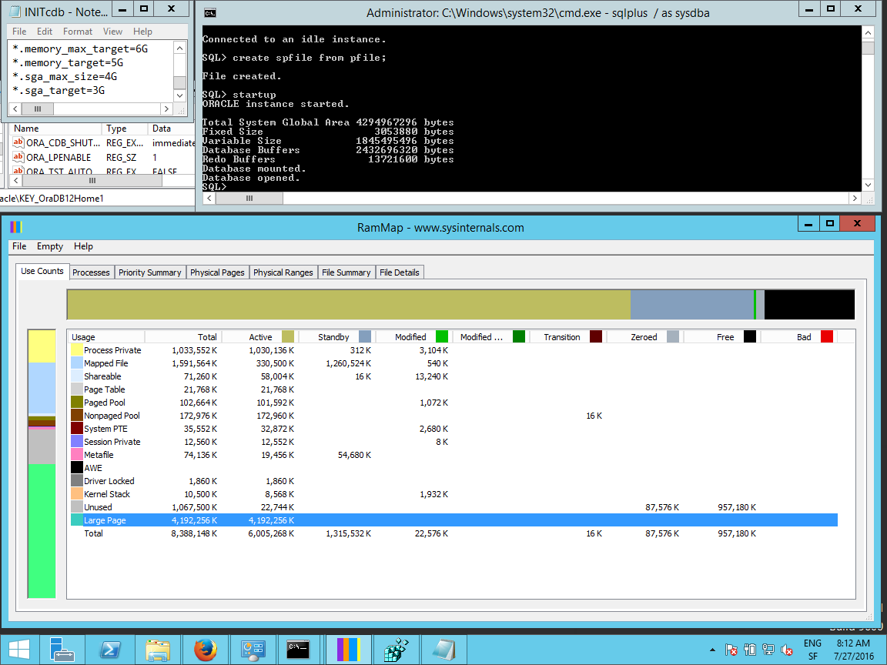
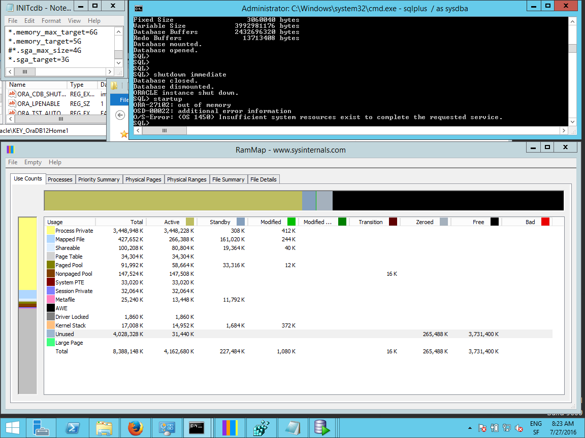
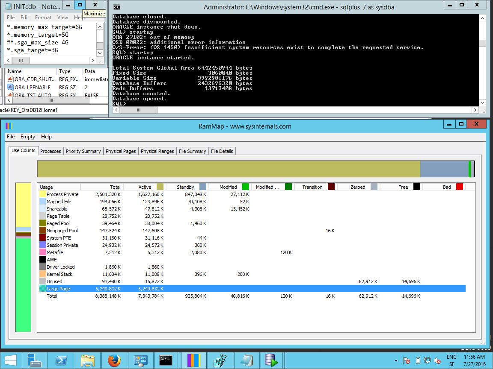
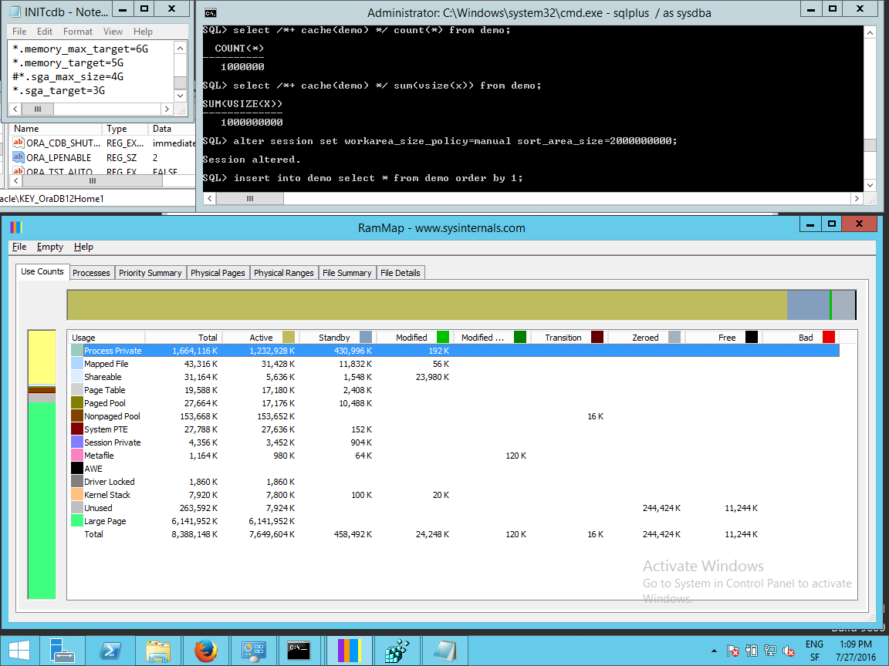

In a previous post about enabling large page on Windows Server, I explained that it’s possible to use large pages with Automatic Memory Management (AMM, where sizing if SGA and PGA is automatic with MEMORY_TARGET setting) but possible does not mean that it is recommended. We feel that it’s not a good idea, but are there reasons for it or it’s just our linux backgroud that brings this opinion?
SGA_MAX_SIZE=4G, MEMORY_MAX_SIZE=6G
What is the size of allocated large pages? If it is set, SGA_MAX_SIZE is the size allocated as large pages when ORA_LPENABLE=1, even if you’ve set some MEMORY_MAX_SIZE: 
{kind=link}
I take screenshots with all information: the init.ora settings and the regedit entry on top-left. Latest sqlplus commands on top right (here screenshot is just after the startup). And memory given by Sysinternals RamMap.
So, when SGA_MAX_SIZE is set, it’s the maximum size of SGA that can be allocated, and this is what is allocated at startup from physical memory until the end of the instance. You can reduce the SGA_TARGET dynamically, but I don’t see any reason for that as the memory allocated in large page will not be released, nor swapped, nor usable for PGA.
SGA_MAX_SIZE unset, MEMORY_MAX_SIZE=6G
If we don’t set SGA_MAX_SIZE, then the SGA can grow up to MEMORY_MAX_SIZE and this is what is allocated at startup when ORA_LPENABLE=1:
{kind=link}
Physical memory must be free
When ORA_LPENABLE=1 and not enough memory is available if physical memory, you get an error (ORA-27102 OS 1450) at startup: 
{kind=link}
What I did here was running 10 instances of SQLDeveloper to use 2GB on my 8GB VM.
Fragmentation
Not only we need the SGA to be allocated from physical memory, but it needs to be contiguous. Here is a screenshot I took some times later with those sqldev closed but after I had lot of activity on the VM:
 As you see here, there is enough RAM (7GB) but not contiguous.
As you see here, there is enough RAM (7GB) but not contiguous.
The recommandation when using large pages on Windows is to start all instances immediately after server restart, and if you have to restart an instance you may have to reboot the server. Note that the major advantage of large pages is on virtualized environments, and then you should not have more that one instance in a server. If you are convinced that with Windows it’s always good to restart the server, here you have a reason: fragmentation breaks large pages.
Mixed-mode
Let’s go back to the state where I had 10 SQLDeveloper opened. I change ORA_LPENABLE to 2 instead of 1 to be able to start the instance even is there is not enough contiguous RAM for the SGA (here for the MEMORY_TARGET as no SGA_MAX_SIZE is defined).
Now, I’m able to start the instance (but it took several minutes here as physical memory is exhausted):  Instance is started, but not all 6GB have been allocated as large pages. In this case where SGA_TARGET is 3GB, I presume that all SGA uses large pages unless we increase SGA_TARGET higher than the 5GB allocated, but this is only my guess.
{kind=link}
MEMORY_MAX_SIZE and ORA_LPENABLE=0
So, now that we know how it works, let’s see the danger to run AMM with large pages.
Here is a database in AMM where MEMORY_TARGET=5GB after running some query that needs several GB of buffer cache (thanks to CACHE hint and “_serial_direct_read”=never) and several GB of PGA (thanks to manual workarea size policy). First, without large pages:
{kind=link}
The RAM allocation is all private process memory (on Windows, Oracle processes are actually threads from one process only). And AMM achieves its goal: target is MEMORY_TARGET=5GB and this is what we have allocated for the instance.
MEMORY_MAX_SIZE and ORA_LPENABLE=2
Now doing the same with large page: 
{kind=link}
MEMORY_MAX_SIZE is supposed to be used for PGA+SGA and a large use of PGA should reduce SGA. But it cannot be done here because SGA is large page and PGA cannot be allocated from large pages. This means that AMM with large page do not achieve its goal. MEMORY_MAX_SIZE acts like having set SGA_MAX_SIZE to that value and very small PGA_AGGREGATE_TARGET. In this example (artificial example as I used manual workarea size policy, but same happens with auto and several sessions) physical memory is exhausted.
From that, I think we have a reason to recommend ASSM (Automatic Shared Memory Management) with large pages, as with Linux. In Oracle, because of the threaded architecture, it’s not a requirement but in my opinion it’s still a good idea to differentiate those memory areas that are so different:
- SGA: one area allocated at startup, preferentially from large pages
- PGA: variable size areas allocated and de-allocated by sessions
If you have more than few GB on your server, you should size SGA and PGA independently and benefit from large pages for SGA. Do not set MEMORY_MAX_SIZE then. Don’t set MEMORY_TARGET either as it acts as MEMORY_MAX_SIZE if this one is not set.
Added 18th December 2016
In the above, I explained that using AMM is not a good idea with large pages because the allocated MEMORY_TARGET was not used for PGA. It can be worse. AMM may try to release some large pages to allocate small pages for PGA. And re-get large page later. This can bring huge fragmentation and contention. This has been confirmed by Oracle developers.
So the conclusion is clear: don’t use AMM with large pages even on Windows where it is allowed. Recommandation is to use large pages and set SGA_TARGET and PGA_AGGREGATE_TARGET without setting MEMORY_TARGET.